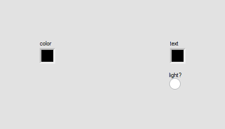
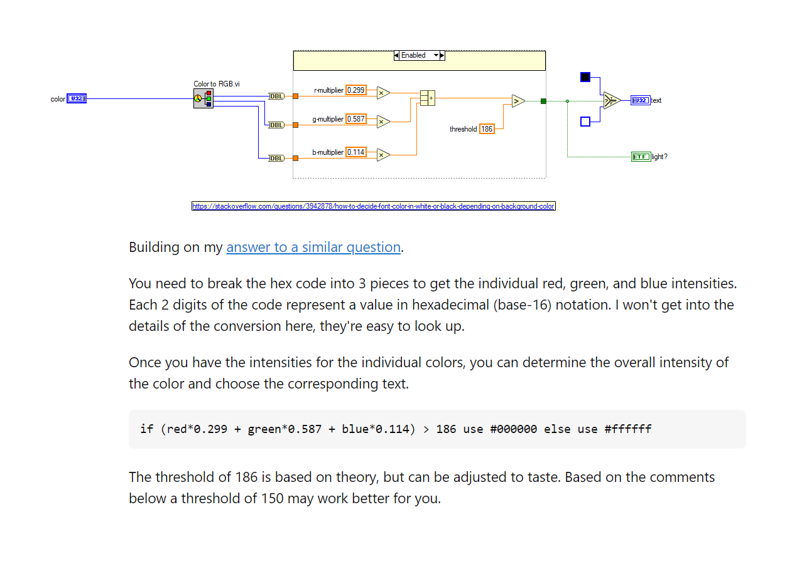
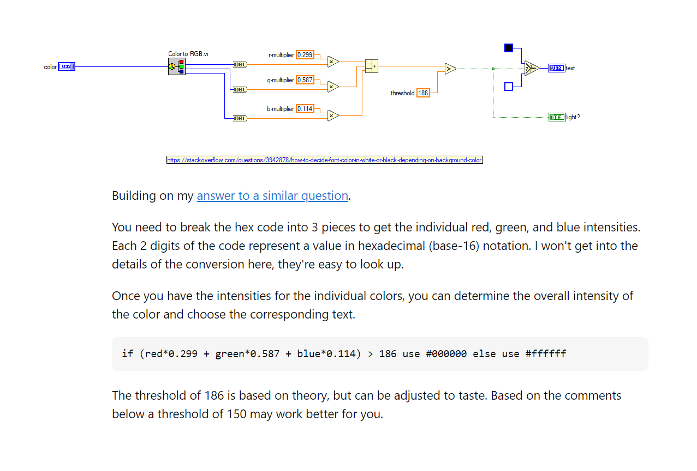
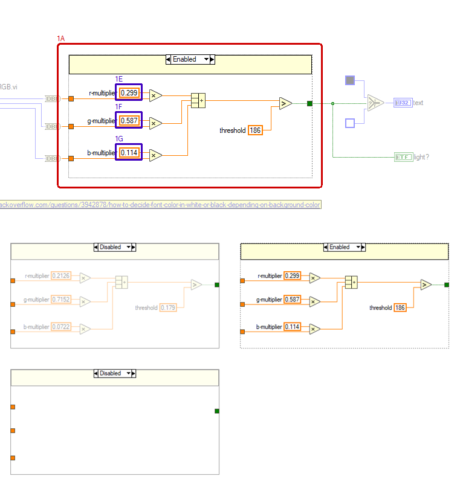
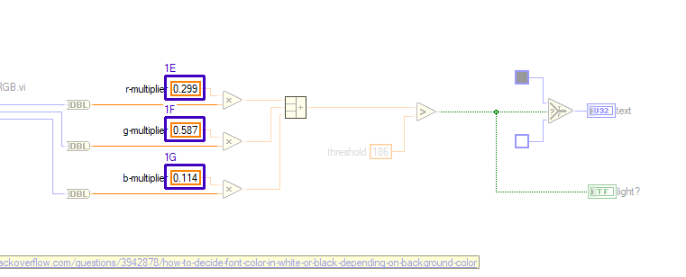

LabVIEW VI Comparison Report
7/13/2026 7:49:31 PM
First VI: C:\workspace-base\Theme\Pick Text Color.viSecond VI: C:\workspace\Theme\Pick Text Color.vi
| Front Panel Overview | ||

|
 | |
| Block Diagram Overview | ||
|
 |
 |
- Front Panel
- Front Panel Position/Size
- Block Diagram Functional
- Block Diagram Cosmetic
- VI Attribute
Detailed Information
1. Block Diagram objects
| C:\workspace-base\Theme\Pick Text Color.vi | C:\workspace\Theme\Pick Text Color.vi | |
|
 |
 |
- Diagram Disable Structure - deleted at (437,163)
- Code Disable Tunnel - deleted at (437,232)
- Code Disable Tunnel - deleted at (437,278)
- Code Disable Tunnel - deleted at (437,331)
- Numeric Constant "r-multiplier" - moved : changed from "(521,218)" to "(513,210)"
- Numeric Constant "g-multiplier" - moved : changed from "(521,264)" to "(513,256)"
- Numeric Constant "b-multiplier" - moved : changed from "(521,317)" to "(513,309)"
- Numeric Constant "r-multiplier" - deleted at (515,218)
- Numeric Constant "g-multiplier" - deleted at (515,264)
- Numeric Constant "b-multiplier" - deleted at (515,317)
- Multiply - deleted at (571,221)
- Multiply - deleted at (571,267)
- Multiply - deleted at (571,320)
- Compound Arithmetic - deleted at (640,227)
- Numeric Constant "threshold" - deleted at (725,280)
- Greater? - deleted at (786,234)
- Code Disable Tunnel - deleted at (832,240)
- wiring changes
2. VI Attribute - Documentation (VI Properties)
- description text : changed from "perform a calculation to determine which font color should be used for a given background color" to "perform a calculation to determine which font color should be used for a given background color Code Developed By: + Daniel Coons + https://github.com/danielcoons/tsc-pop-up"
3. VI Attribute - Execution (VI Properties)
- Allow Debugging : changed from "enabled" to "disabled"